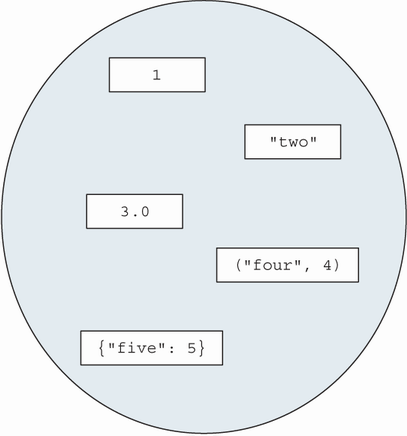
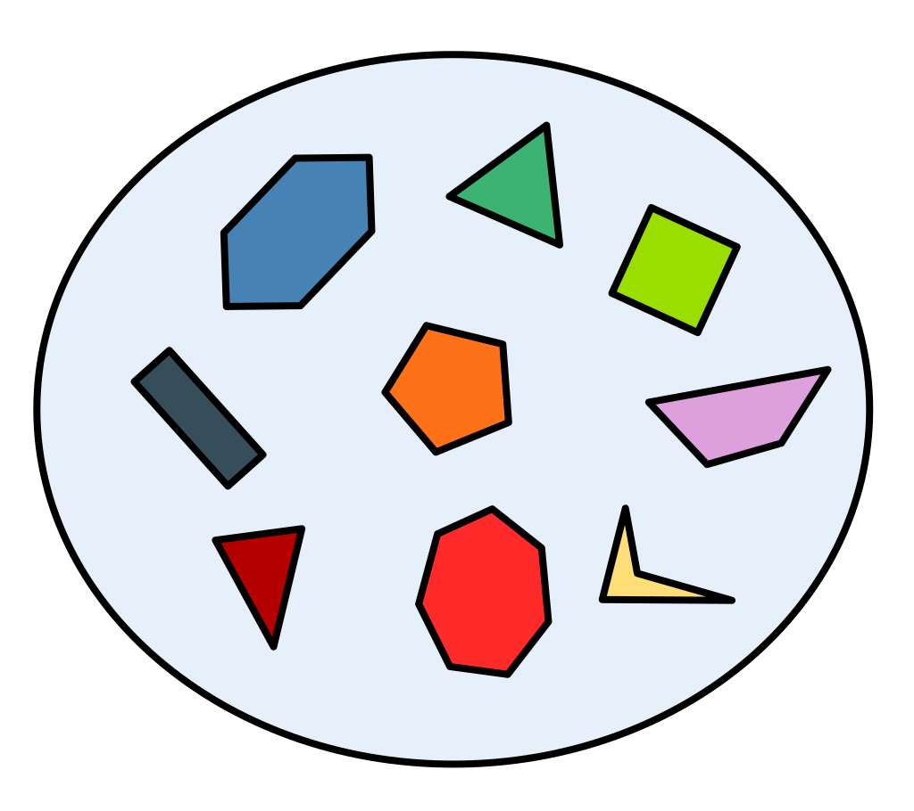
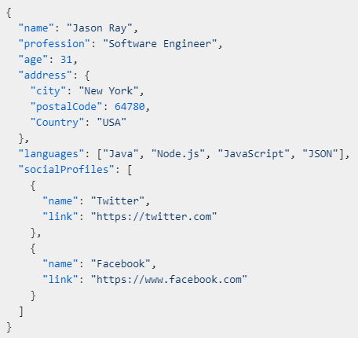

Resilient distributed datasets#
Resilient distributed datasets, or RDDs, are the fundamental blocks in PySpark. The associated Colab notebook can be found here.
What is RDD?#
RDD is essentially a collection of unordered objects,
or a mathematical set,
or a Python list of objects,
or similar to a JSON.
 |
 |
 |
|---|---|---|
Fig. Collection of objects |
from pyspark.sql import SparkSession
spark = SparkSession.builder.getOrCreate()
collection = [1, "two", 3.0, ("four", 4), {"five": 5}] # generic list
sc = spark.sparkContext
collection_rdd = sc.parallelize(collection) # list promoted to RDD
print(collection_rdd)
ParallelCollectionRDD[0] at readRDDFromFile at PythonRDD.scala:289
# collection_rdd.collect()
Why RDD if we have dataframes?#
If the data at hand are more freeformed, using an RDD allows for storage of various types of objects.
Compared to dataframe, which will attempt (and fail) to find a common denominator to fit the data above.
Main ingredients of RDD manipulation#
We cover three main building blocks for using RDDs, inheriting the concept of a MapReduce scheme.
Each of the following building blocks (functions) takes a functional input:
map()filter()reduce()
map through an example#
map() applies the given function to each element of the RDD.
from py4j.protocol import Py4JJavaError
def add_one(value):
return value + 1
collection_rdd_p1 = collection_rdd.map(add_one)
try:
print(collection_rdd_p1.collect())
except Py4JJavaError as e:
pass # print(e)
# You'll get one of the following:
# TypeError: can only concatenate str (not "int") to str
# TypeError: unsupported operand type(s) for +: 'dict' and 'int'
# TypeError: can only concatenate tuple (not "int") to tuple
{kind=link}
Fig. 13 Applying add_one() to each element of RDD through map() (Fig 8.2, [Rioux, 2022]).#
Quick note:
Why did the line throw an error?
When was the error thrown?
A potential fix:
def safer_add_one(value):
try:
return value + 1
except TypeError:
return value
# collection_rdd_p1_again = collection_rdd.map(safer_add_one)
Lesson here:
PySpark does not warn you about the content of the RDD.
As the developer, we are responsible for how to deal with the data given to an RDD.
filter through an example#
filter() takes a function that returns True/False based on any conditions.
collection_rdd_filter = collection_rdd.filter(
lambda elem: isinstance(elem, (float, int))
)
# print(collection_rdd_filter.collect())

Fig. 14 Applying filter() to the RDD (Fig 8.3, [Rioux, 2022]).#
A word about lambda function
{kind=link}
Fig. 15 The use of lambda function [Rioux, 2022].#
reduce through an example#
reduce() summarizes the RDD by sequentially applying the given function.
similar to
groupby()in a dataframe.
from operator import add
collection_rdd2 = sc.parallelize([4, 7, 9.2, 5.6, -20])
# collection_rdd2.reduce(add)
# collection_rdd2.reduce(
# lambda a, b: a + b
# )
{kind=link}
Fig. 16 Applying add through reduce() to the RDD (Fig 8.4, [Rioux, 2022]).#
Warnings about reduce()
What functions are reasonable for
reduce()?commutative operation
associative operation
Additional Note:
A dataframe is actually an RDD, e.g.,
# df = spark.createDataFrame([[1], [2], [3]], schema=["column"])
# print(df.rdd)
# print(df.rdd.collect())